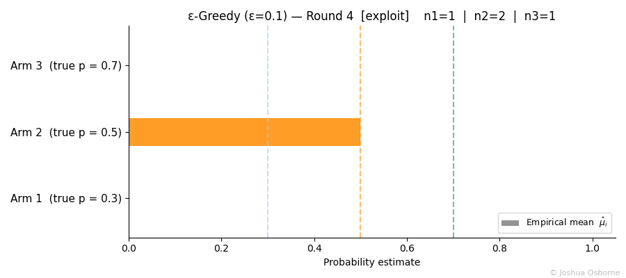
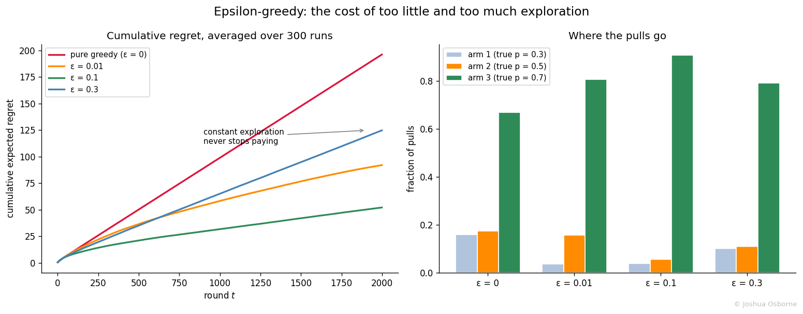

Statistics Notes
The simplest bandit strategy: explore by coin flip. Why fixed epsilon gives linear regret and how decaying schedules help.
Contents
Epsilon-greedy is one of, if not the the simplest multi-arm bandit strategy: with probability \(\varepsilon\) pull a random arm to keep learning, otherwise pull the arm that currently looks best.
The multi-arm bandit problem forces a choice every round: either pull the best arm or if you pull a value less than or equal to \(\epsilon\), pull an arm at random. Pure exploitation can lock onto a mediocre arm forever because a few unlucky early pulls made the best arm look bad.
Epsilon-greedy resolves this with a coin flip. It is the baseline against which fancier/better strategies like Upper Confidence Bound and Thompson sampling are judged. In industry, it remains popular because it is trivial to implement, easy to reason about, and good enough when the horizon is short or the arms are easy to tell apart.
Maintain a running mean reward \(\hat{\mu}_i\) for each arm \(i\). At each round \(t\):
A common start is to pull every arm once at the start so each \(\hat{\mu}_i\) is initialized with real data instead of a tie at zero.
| Symbol | Type | Meaning |
|---|---|---|
| \(K\) | integer | number of arms |
| \(\varepsilon\) | scalar | exploration probability, in \([0, 1]\) |
| \(\mu_i\) | scalar | true mean reward of arm \(i\), in \([0, 1]\) for Bernoulli arms |
| \(\mu^*\) | scalar | mean of the best arm, \(\max_i \mu_i\) |
| \(\Delta_i\) | scalar | suboptimality gap of arm \(i\), \(\mu^* - \mu_i\) |
| \(\bar{\Delta}\) | scalar | average gap across arms, \(\frac{1}{K}\sum_i \Delta_i\) |
| \(\hat{\mu}_i\) | estimator | running mean reward of arm \(i\) from pulls so far |
| \(n_i\) | integer | number of times arm \(i\) has been pulled |
| \(r_j\) | random variable | observed reward on pull \(j\) (0 or 1 for Bernoulli arms) |
| \(T\) | integer | horizon, total number of rounds played |
| \(t\) | integer | current round, \(1 \leq t \leq T\) |
| \(R(T)\) | scalar | cumulative expected regret after \(T\) rounds |
| \(\varepsilon_t\) | scalar | exploration probability at round \(t\) in a decaying schedule |
| \(c\) | scalar | tuning constant in a decay schedule |
Storing every reward is wasteful. The running mean can be updated in place.
Step 1. After \(n_i\) pulls, the mean of arm \(i\) is by definition
\[\hat{\mu}_i^{(n_i)} = \frac{1}{n_i} \sum_{j=1}^{n_i} r_j\]
Step 2. Split the newest reward \(r_{n_i}\) out of the sum:
\[\hat{\mu}_i^{(n_i)} = \frac{1}{n_i}\left(\sum_{j=1}^{n_i - 1} r_j + r_{n_i}\right)\]
Step 3. The remaining sum is \((n_i - 1)\) times the previous mean, because \(\hat{\mu}_i^{(n_i-1)} = \frac{1}{n_i-1}\sum_{j=1}^{n_i-1} r_j\) rearranges to \(\sum_{j=1}^{n_i-1} r_j = (n_i - 1)\,\hat{\mu}_i^{(n_i-1)}\). Substitute it in:
\[\hat{\mu}_i^{(n_i)} = \frac{(n_i - 1)\,\hat{\mu}_i^{(n_i-1)} + r_{n_i}}{n_i}\]
Step 4. Rewrite \(\frac{n_i - 1}{n_i}\) as \(1 - \frac{1}{n_i}\) and regroup:
\[\hat{\mu}_i^{(n_i)} = \hat{\mu}_i^{(n_i - 1)} + \frac{1}{n_i}\left(r_{n_i} - \hat{\mu}_i^{(n_i - 1)}\right)\]
The new mean is the old mean nudged toward the latest reward by a step of size \(1/n_i\). Each observation moves the estimate less as evidence accumulates, the same diminishing-update behavior seen in the Beta pseudo-counts of Thompson sampling.
Three arms with true (unknown) rates \(\mu_1 = 0.3\), \(\mu_2 = 0.5\), \(\mu_3 = 0.7\), and \(\varepsilon = 0.1\). Each arm has been pulled once to initialize:
| Arm | \(n_i\) | \(\hat{\mu}_i\) |
|---|---|---|
| 1 | 1 | 1.0 |
| 2 | 1 | 0.0 |
| 3 | 1 | 1.0 |
Round 4. Random draw \(u = 0.63 > 0.1\), so exploit. Arms 1 and 3 tie at 1.0; break the tie by lowest index and pull arm 1. Reward \(r = 0\). Incremental update: \(\hat{\mu}_1 = 1.0 + \frac{1}{2}(0 - 1.0) = 0.5\).
Round 5. Draw \(u = 0.04 < 0.1\), so explore. The random arm comes up 2. Reward \(r = 1\). Update: \(\hat{\mu}_2 = 0.0 + \frac{1}{2}(1 - 0.0) = 0.5\).
Round 6. Draw \(u = 0.88\), exploit. Arm 3 leads at 1.0, pull it. Reward \(r = 1\). Update: \(\hat{\mu}_3 = 1.0 + \frac{1}{2}(1 - 1.0) = 1.0\).
| Arm | \(n_i\) | \(\hat{\mu}_i\) | true \(\mu_i\) |
|---|---|---|---|
| 1 | 2 | 0.5 | 0.3 |
| 2 | 2 | 0.5 | 0.5 |
| 3 | 2 | 1.0 | 0.7 |
Notice what round 4 shows: a single lucky pull made arm 1 look perfect and exploitation chased it. Only the exploration coin flips guarantee that arms 2 and 3 keep getting sampled until the estimates settle near the truth. With \(\varepsilon = 0\) that guarantee disappears, which is exactly how pure greedy gets stuck.
Epsilon-greedy is a thermostat with two settings. The exploitation setting samples the best known arm; the exploration setting pays a known price (\(\bar{\Delta}\) per random pull) to discover new information. The dial, \(\varepsilon\), sets how often each fires.
The animation below shows each arm’s running mean converging toward its true probability (dashed line). Unlike Upper Confidence Bound, the fixed \(\varepsilon = 0.1\) keeps all three arms receiving pulls throughout, so all three means settle near their true values. The title tracks whether each pull was an explore or exploit decision and the per-arm counts (although somewhat hard to see).

The full regret comparison across \(\varepsilon\) values:

What to look at:
Left, red (pure greedy, \(\varepsilon = 0\)): worst of all. With no exploration it almost fully commits to whichever arm got lucky first and never recovers (I saw almost could you could theoretically get 0 when you generate your random value)
Left, blue (\(\varepsilon = 0.3\)): learns fast but keeps paying the exploration tax; the curve is a straight line that never flattens
Left, green (\(\varepsilon = 0.1\)): the sweet spot at this horizon, low tax with enough exploration to find arm 3
Right: pull allocation. Even at \(\varepsilon = 0.1\) roughly 9% of pulls go to the two inferior arms forever; that floor is \(\varepsilon \cdot \frac{K-1}{K}\), the permanent cost of a fixed dial
“Higher epsilon means more learning, so it must be safer.” Exploration has a per-round price and a fixed-\(\varepsilon\) algorithm pays it forever. Once the arms are well separated, every additional exploration pull is pure waste. The figure’s \(\varepsilon = 0.3\) line ending above \(\varepsilon = 0.01\) makes the point.
“Pure greedy with optimistic initialization fixes everything.” Initializing every \(\hat{\mu}_i\) above the maximum possible reward does force early exploration and often works well in practice. But it is a finite supply of exploration: once the optimism wears down, the algorithm is pure greedy again and can still commit to a wrong arm in noisy settings. It also requires knowing an upper bound on rewards in advance.
“Exploring all non-best arms equally is fine.” It is the algorithm’s deepest flaw. An exploration pull is equally likely to test a near-optimal arm and a hopeless one. Upper Confidence Bound and Thompson sampling both steer exploration toward arms that are still plausible winners, which is exactly where their efficiency advantage comes from.
“The estimates \(\hat{\mu}_i\) are unbiased.” Not quite. Arms get pulled more when their running mean happens to be high, which couples sample size to noise. The bias is small for the winning arm and the algorithm still converges, but the weaker arms’ estimates stay noisy forever because they stop receiving pulls, the same non-convergence noted in the Thompson sampling limitations.
“Regret means the algorithm did something wrong.” Regret is not an error count. Even an optimal strategy accrues regret while gathering the evidence needed to tell the arms apart; the question is whether the growth is linear (fixed epsilon) or logarithmic (Upper Confidence Bound).
Upper Confidence Bound: replaces the coin flip with a deterministic optimism bonus, achieving logarithmic regret
Thompson sampling: replaces the coin flip with posterior sampling; exploration emerges from uncertainty instead of a dial
What is AB-testing: a classic A/B test is the extreme schedule, pure exploration for a fixed window followed by pure exploitation forever
Bernoulli distribution: the reward model for each arm in the binary-reward setting used here
Sutton, R. S., Barto, A. G. (2018). Reinforcement Learning: An Introduction, 2nd ed. MIT Press. Chapter 2.
Slivkins, A. (2019). Introduction to Multi-Armed Bandits. Foundations and Trends in Machine Learning. https://arxiv.org/abs/1904.07272
Lattimore, T., Szepesvari, C. (2020). Bandit Algorithms. Cambridge University Press.